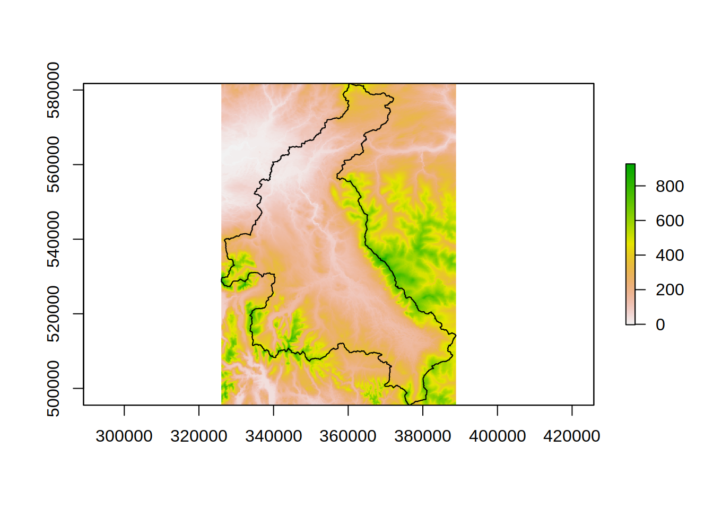
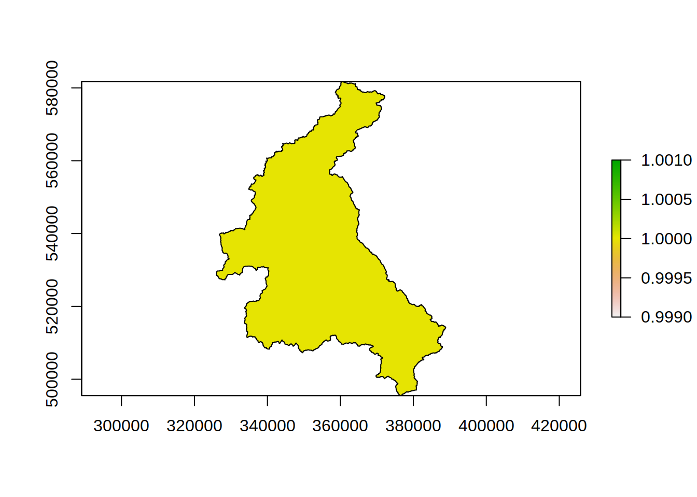
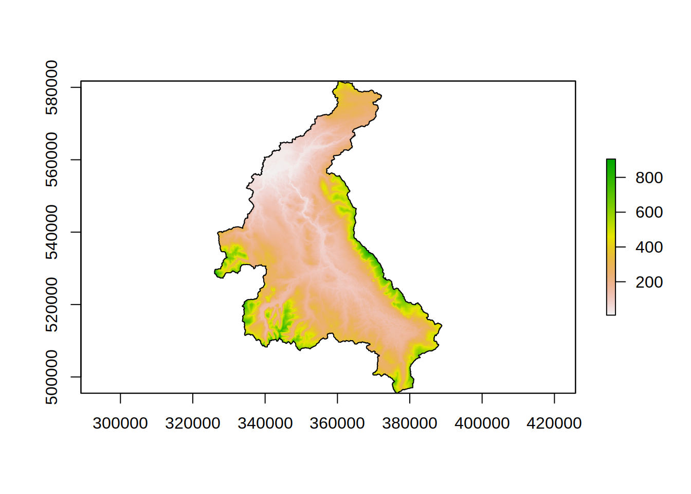

To explore and pre-process the GIS data for the example catchment.
R has multiple packages for the processing and analysis spatial data. A good overview is given in the Spatial Task View on CRAN. For this part of the training course we use a set of mature packages, rgoes, rgdal, and raster. Similar results could be obtained using either of the terra or sf packages.
To install the packages enter at the R command prompt
install.packages(c("rgeos","rgdal","raster","sp"))Once installed the raster and sp packages are attached to the R environment so that there functions are available.
library(raster)
library(sp)The basis of the landscape discretisation is the DEM of the catchment. Start by loading and plottign the DEM dta and the catchment outline in the example data. To do this we will use the raster package which allows the manipulation of raster (and some vector) GIS data in R.
dem <- raster(file.path(".","eden_data","unprocessed","dem.tif")) # load the dem as a raster layer
#> Warning in showSRID(SRS_string, format = "PROJ", multiline = "NO", prefer_proj =
#> prefer_proj): Discarded datum OSGB 1936 in Proj4 definition
eden <- shapefile(file.path(".","eden_data","unprocessed","76007")) # load the outline of the catchment from the shapefile
#> Warning in OGRSpatialRef(dsn, layer, morphFromESRI = morphFromESRI, dumpSRS =
#> dumpSRS, : Discarded datum OSGB_1936 in Proj4 definition: +proj=tmerc +lat_0=49
#> +lon_0=-2 +k=0.9996012717 +x_0=400000 +y_0=-100000 +ellps=airy +units=m +no_defs
## plot the dem and outline
plot(dem)
plot(eden,add=TRUE)
In the above plot we can see that the DEM extends beyond the boundary of the catchment. The processing in dynatopGIS treats all the finite DEM values as being within the catchment. This means we need to trim teh DEM to the catchment boundaries.
To acheive this we will first rasterise the catchment boundary
edenRaster <- rasterize(eden, dem, field=1)
plot(edenRaster)
plot(eden,add=TRUE) then mask the DEM to set all values outside the catchment to NA
edenDEM <- mask(dem,edenRaster)
plot(edenDEM)
plot(eden,add=TRUE)
The raster fields created (edenRaster, edenDEM) exist only in memory (or tempory files). Since edenDEM will be needed later we will save it:
writeRaster(edenDEM,file.path(".","eden_data","processed","edenDEM.tif"),overwrite=TRUE)
#> Warning in showSRID(SRS_string, format = "PROJ", multiline = "NO", prefer_proj =
#> prefer_proj): Discarded datum OSGB 1936 in Proj4 definitionTo those of familiar with the raster package might have noticed that edenDEM could have created in one line by
edenDEM <- rasterize(eden, dem, mask=TRUE)